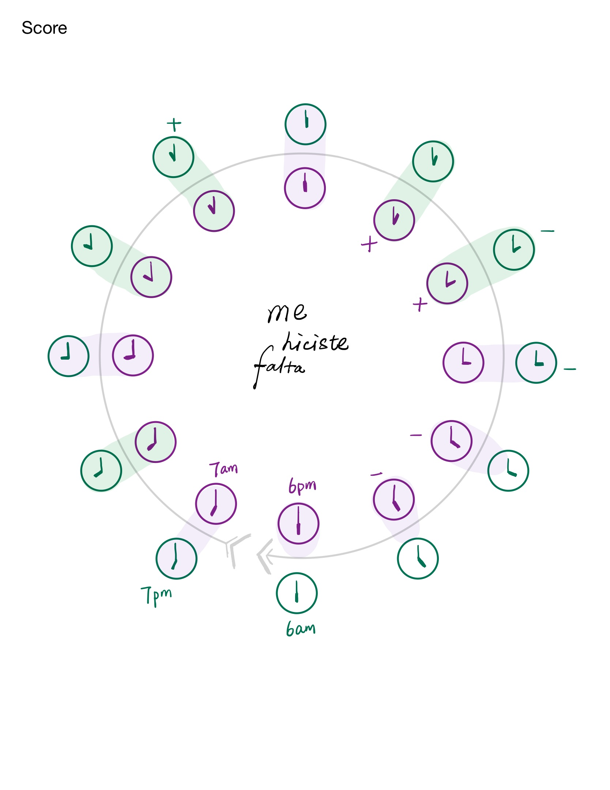
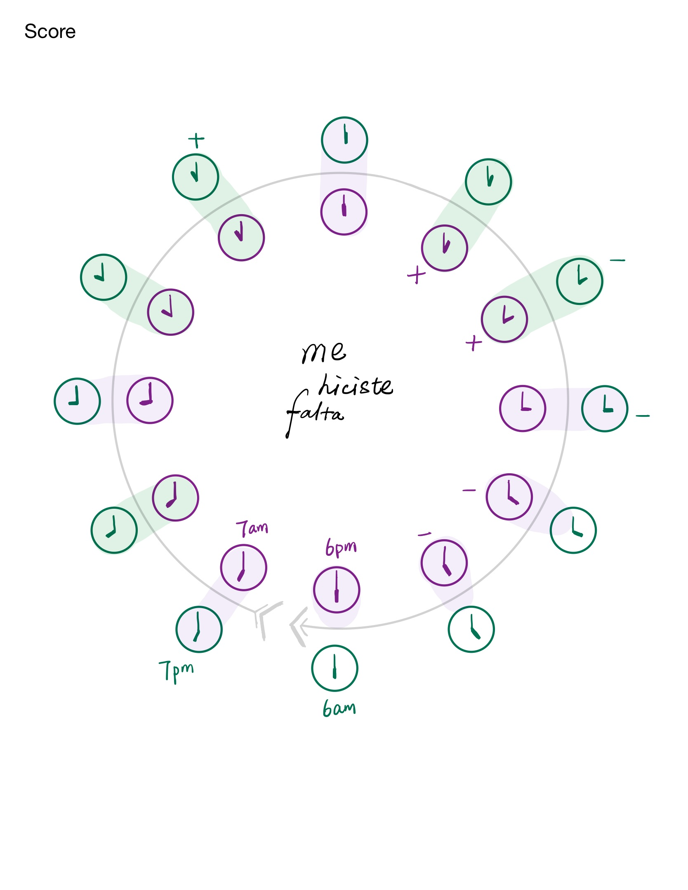
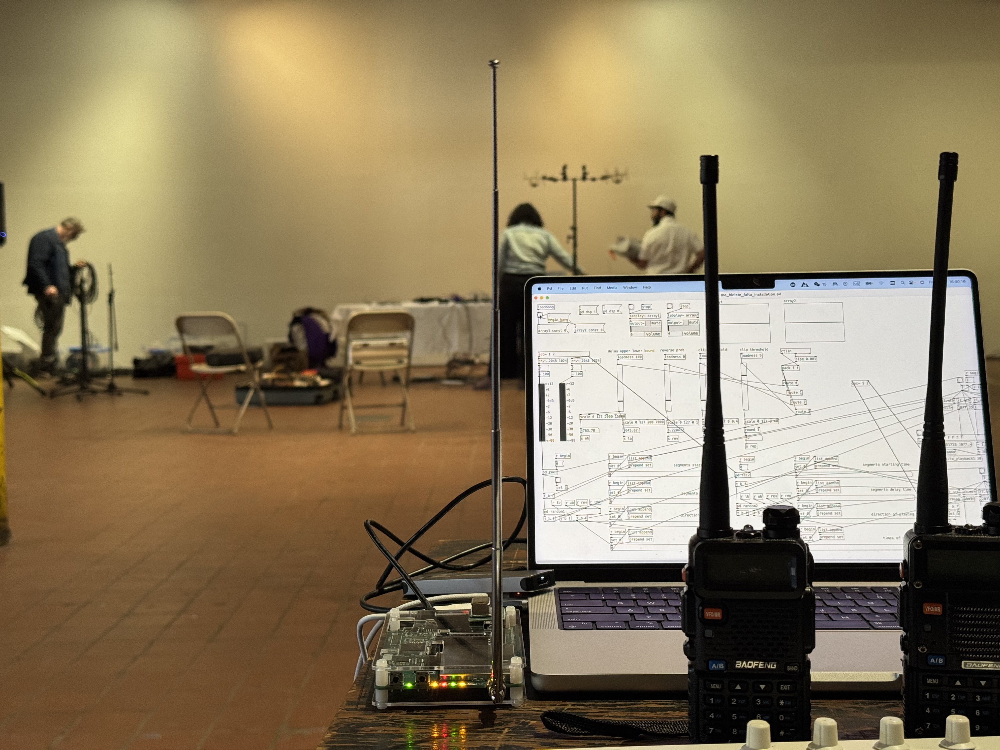
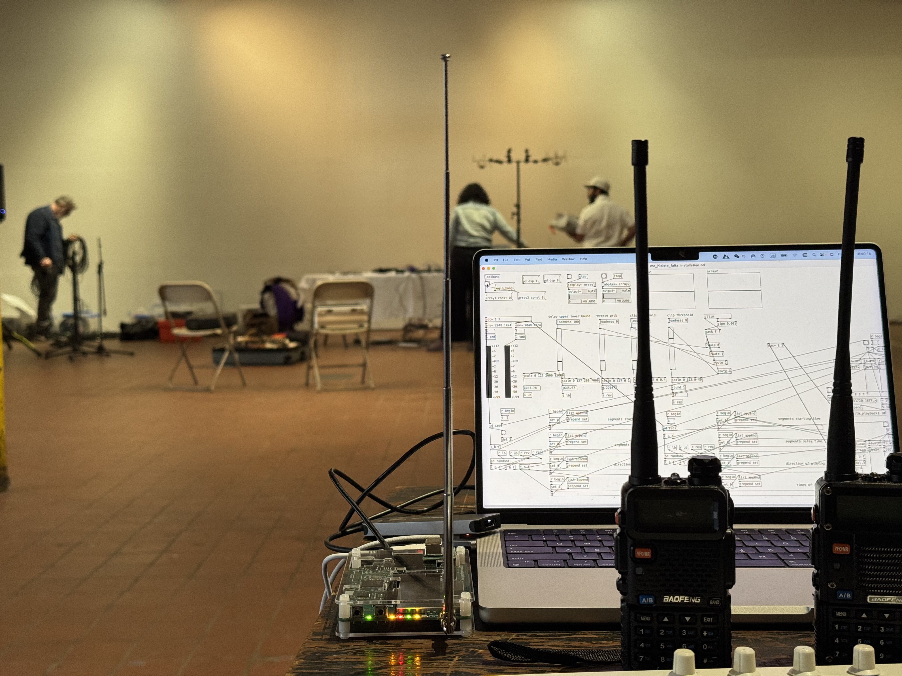

Me Hiciste Falta(2024)
Event-score composition for live-electronics, ham radios and Software Defined Radio (HackRF One) based installation, two performers and objects.

 

Interpreted and recorded by Duo Lingua, released in album Unrestricted Lanes by Bogotana Records.

 

Press 'Enter' to return to the previous page.